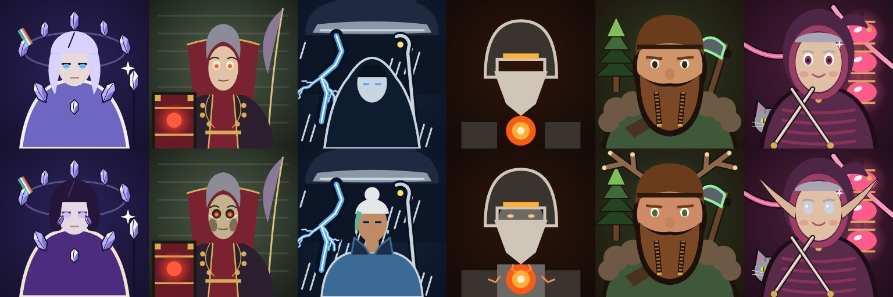
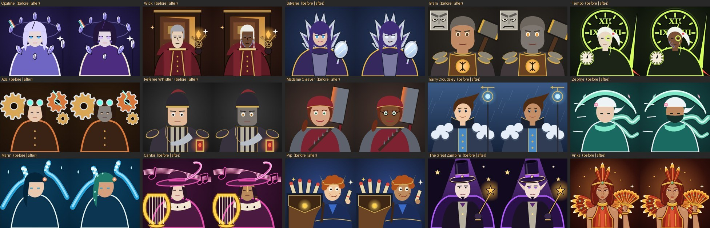

Sixteen heroes touched to show their peoples
2026-11-16 · the sixteen touches of the lore's plan (docs/lore/codex/revamp.md), the painted underwear covered, and the portraits of
everyone whose look changed. A touch is a small change of skin, eyes or a people's mark; each hero keeps its kit, title, clothes, colours and weapon.
Every picture is the game's own figure in the hero stand's light, or the game page in a CPU duel against Sefu on the same arena, before and after.
Not pushed, not deployed.
Portraits
The 2D portraits on the hero bar, the cards and the boards are drawn in code (each hero's portrait in src/kits/). Redrawn for
the six revamps and fourteen of the touches; Vesper's portrait is a crescent and a drop of blood, and Shiori's shows no hands, so neither changed.
Zephyr's portrait also gets the mask his model always wore.
The six revamps (old above, new below)

The touches (each pair: before, after)

The painted underwear
The pack's skin texture has grey shorts painted on it (and a grey band and briefs on the female body). Every one of the 40 models was drawn with that
paint shown white and everything else black, from eight sides, standing, walking and at the attack, from the stand's camera and the game's: only
Big Yoko showed it (185 pixels at most; Opaline 7 and Sefu 1, specks at a seam). It is now covered in the kit itself
(blender/heroes/realkit.py, _cover_underwear): where the pack's texture is grey, each pixel takes the average of the skin round it,
after the skin's tone and before any painted mark. No contact shadow, no gold edges, no size (Yoko 507 → 503 KB). It is the same mask the TextureCraft
sample used (its scripts are in pipeline/textures/texturecraft/); done in the build, every hero built from now on is covered, the sixteen above
included. Big Yoko is in the hero list above (his after pictures and a close-up of the hips).
What is left, and what to look at
- From the duel camera the faces are small: the skin colours carry (umber, ash-grey, blue-grey, sea-tan, golden-brown), the jaw lines, kohl, henna, tide lines and freckles only from close (the hero stand, the Heroes screen).
- Two small costume changes were needed to show the marks: Barry's flared sleeves now end below the elbow, Zephyr's bracers cover only the wrist half. Marin's slippers are gone; she is barefoot, as her page always said.
- Anka's glow is her skin's own texture as a faint emission (0.34), brighter at the jaw, hairline and fingertips; it makes her skin look lighter and warmer than before. Brannoc's seams are 0.7, Ada's knuckles 0.45.
- Vesper's change is the smallest: she was already pale; now cooler, with a crimson-violet shine in the eyes.
- Wick's braids are the kit's bead braids (as Marin's and Auriel's); close up they read as beads more than plaits.